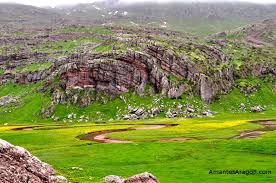

Esta ruta, con tres itinerarios distintos y cada cuál más atractivo, es una de las últimas rutas en moto que hemos realizado en Fórmula Moto. De nuevo descubrimiento por los motoristas, que se multiplican con el paso de los días en Aragón, son estas rutas del Bajo Aragón que te permiten disfrutar de pueblos de solo un centenar de habitantes en los meses de inviernos y que rodean un punto de encuentro vital como es Alcañiz. La extensa gama de imágenes, sabores y olores con los que te obsequia esta zona te invitará a volver a probar de nuevo. Sin duda, la provincia de Teruel, que sí existe, es una gran opción para recorrer a lomos de nuestra moto.
